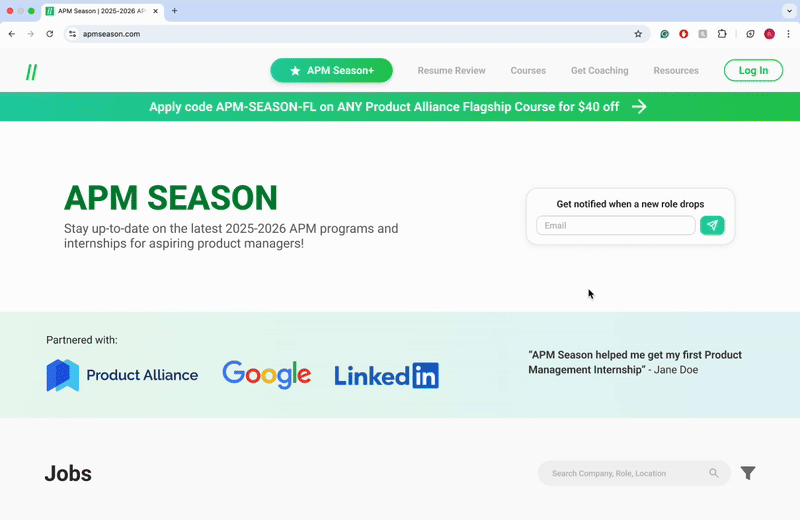
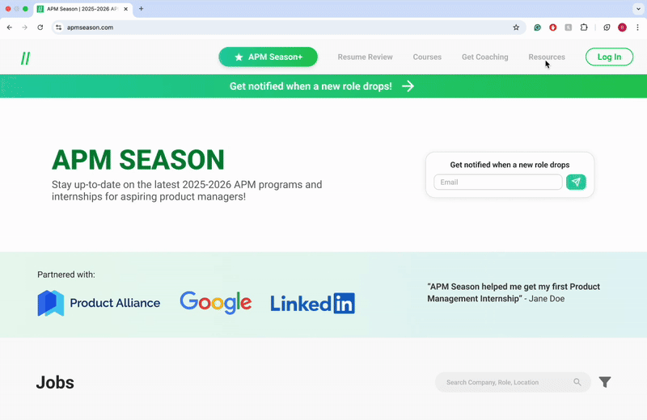
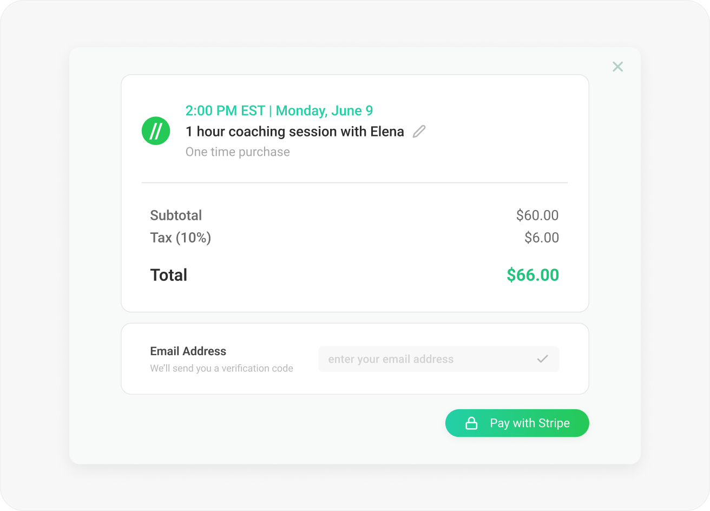
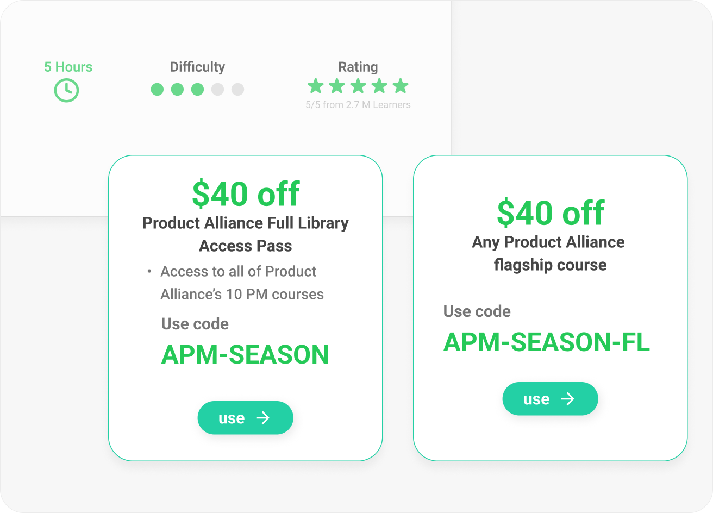
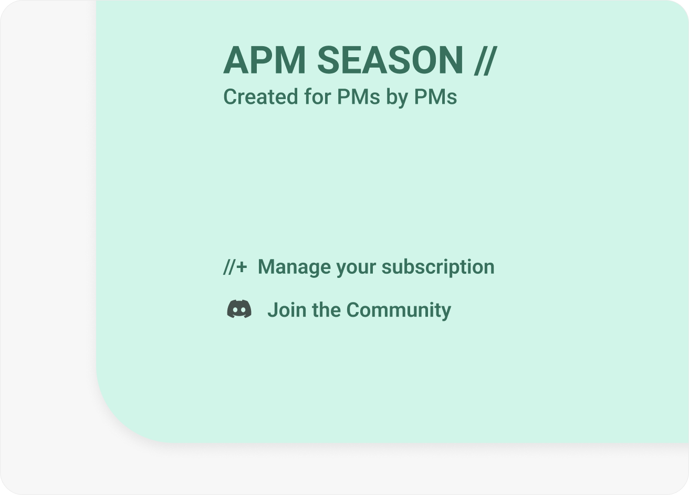

[Duration]
[Start - End]
[Your role]
[Team makeup]
[Tools]
The Project
APM Season is a job finding site for Product Managers. I led the redesign to improve monetization, user experience, and site credibility.
The Problem:
The information architecture buried key features and obscured monetization opportunities. Confused users fell off the site because of its unconventional navigation.
The Outcome:
A redesigned information architecture that reduced user confusion and led users to uncover APM Season’s monetization opportunities.
Why is it innovative?
APM Season is a job finding site for Product Managers. I led the redesign to improve monetization, user experience, and site credibility. The previous information architecture buried key features and obscured monetization opportunities.
How does it improve a person’s life?
Previously, confused users would fall off the website because of the unconventional navigation. With the redesign of the information architecture, users reported less confusion and it led them to uncover APM Season’s monetization opportunities.
What did I learn?
It was valuable to strategize how to monetize a product while balancing user needs. I learned how to think about the different roles while designing with strategists, developers, team leads, and stakeholders.




